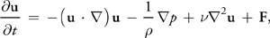
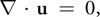
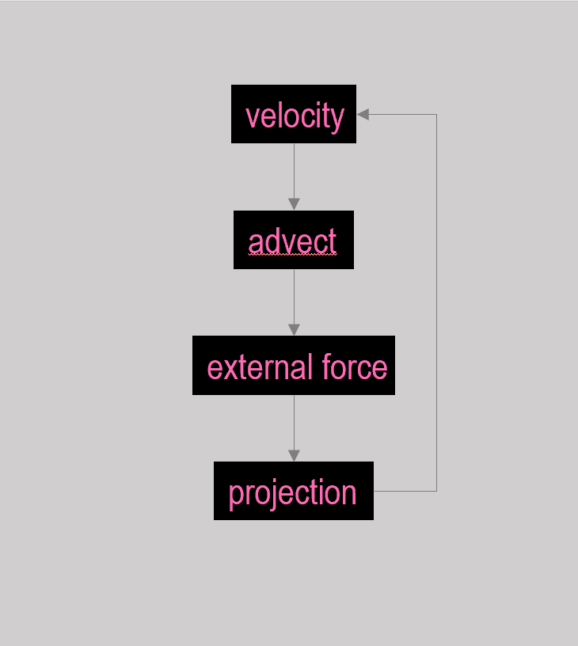
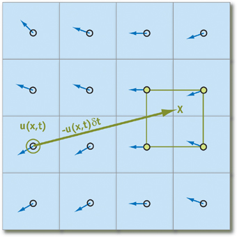
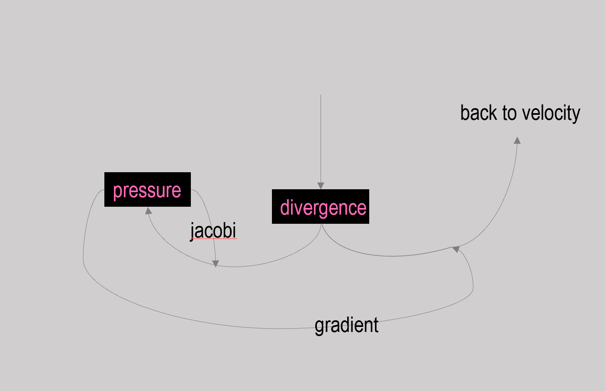

2D Smoke Simulator
Nishant Kalonia || Katie Kim || Yifan Zhang
Summer 2020
Overview
We created a smoke simulator using the Three.js framework and WebGL. The simulator itself models a fluild system with zero viscosity based on the Navier-Stokes equations. The user can then insert color, desnity, and temperature quantities (the "smoke") that applies buoyant forces to the fluid. Additionally, internal values computed at each time step can be visualized for a better understanding of the internals of the simulator. Navigate to the simulation here (or on the navigation bar above). Also checkout our explanation video here! Note: This simulator has only been tested for Google Chrome.
Frameworks and Web Tool
Three.js was what we used to visualize and animate the simulation. Then with the help of WebGL, a Javascript API, we were able to include our graphics in the form of a website. Other tools that we used include dat.gui to allow the user to adjust certain internal and visualization parameters.
Concepts
The formulas used to compute the flow of the fluid at each time step were derived from the Navier-Stokes Equations for incompressible flow: From this equation, we can see that the movement of a fluid at a point is determined by four components:
- Advection: Transportation of quantities in the fluid in relation to the fluid's vector field. In fact, the fluid even advects it's own veclocity field.
- Pressure: The internal forces of the fluid caused by it colliding with itself. Computationally, this will be the most expensive field to track.
- Diffusion: A factor determining the viscosity of the fluid. Air particles have nealy zero viscosity, so this field was ignored.
- External Forces: Whatever external forces are currently acting on the fluid. Since we are creating a smoke simulator, we will have to account for a buoyant force in order for the smoke to rise.
|

|

|
Pipeline
|

|
The main pipeline executed at each time step is used to determine the next velocity field of the fluid by computing and applying the components determined by the Navier-Stokes Equations. In addition to this pipeline, a benign "ink" value is also advected to for the sake of visualizing the smoke. |
Shaders
In order to utilize the GPU to efficiently update a field of values, we utilized shaders to apply operations to our quantity field "textures". A brief description of our utilized shaders is listed below.
Advection
|

|
As said before, Advection is the displacement of a quantity via the vector field. Implementation-wise, we used an implicit method to "trace back" a vector quantity at a fragment. From this backward step, we can bilinearly interpolate the quantity to be advected from the four neighboring fragments, and then update the original fragment with this interpolated value. This implementation adds the benefit of being a generally more stable, implicit method than being a more traditional forward-step implementation. |
External Forces

|
For our implementation, the only external force to be considered. This force was determined by separate temperature and density fields that were advected by the velocity field at the beginning of each time step. As a future endeavor, we would like to incorporate an additional external foce that would be created by the movement of the mouse. |
Projection
|

|
This step updates the velocity field to account for pressure. There are three steps that occur during this phase:
|
Additional Shaders
Additional shaders were used to enhance the user experience. A "splat" shader was created to add a quantity across a field in the form of a gaussian distribution. When the user clicks the mouse, this shader is used to insert "smoke" (or, more precisely, color, density, and temperature quantities). Other shaders were made for the purpose of visualizing the different quantity fields that were being utilized. The sole purpose of these shaders were to map values on a field to corresponding color values. As most of our fields were scalar values, we simply used a scale and biasing scheme for this conversion. For our velocity field, we went with a different scheme of mapping a vector's direction and magnitude to a color's hue and value, respectively, in respect to the HSV color scheme.
Bugs/Future Goals
While most known issues seem to have been fixed, we are aware of a few shortcomings of our simulator:
- Upon clicking the mouse, the point of creating for the smoke does not line up with the center of the mouse. While an attempt was made to rectify this, priority was given to non-ui elements for this project.
- The environment does not scale accordingly after resizing the window. Once again, this has not been resolved to our focus on non-ui elements.
- While not necessarily a bug, the simulator can be pretty computationally expensive. It would be prudent to look into some methods to optimize the pipeline.
- An attempt was made to include a rectangular boundary to the enviornment, but it wasn't operational by the time of submission.
- As a step farther from the previous goal, we would also like to have the ability to include more complicated boundary objects (e.g. a sphere)
- As mentioned previously, the ability to apply forces onto the fluid through the movement of the mouse would add good interactivity.
- Incorporating a diffusion element to our pipeline would allow us to simulate more viscous fluids
- Adding a vorticity step to our pipeline to attempt to more accurately mimic turbulent motion.
References